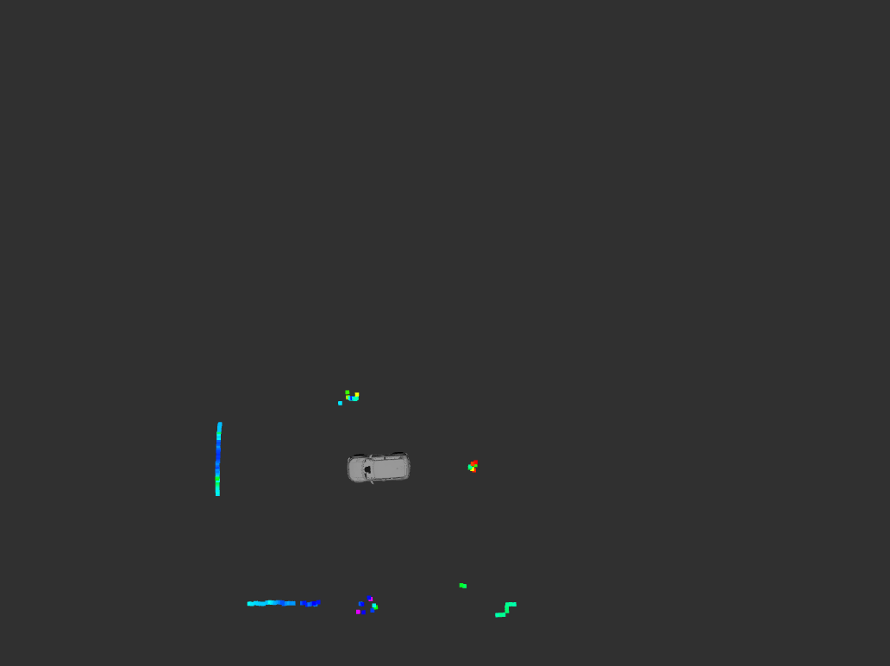
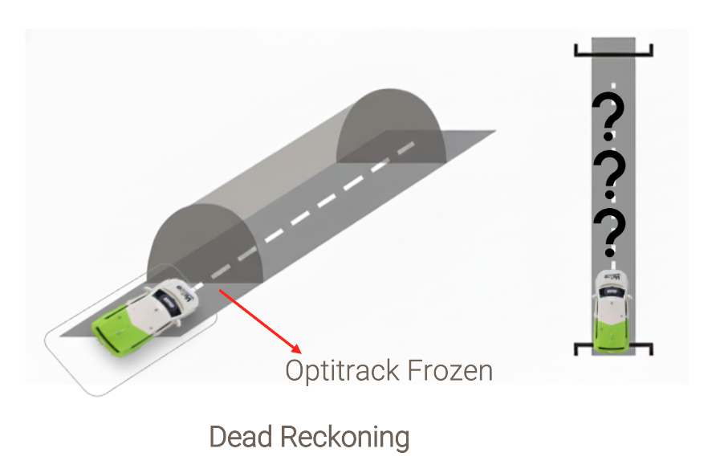

About Me
I am a Master’s student in Autonomous Driving at Coburg University of Applied Sciences, Germany. My work focuses on robotics perception systems, autonomous navigation, and AI-driven mobility solutions.
I have over one year of experience developing software pipelines for autonomous systems using ROS2, computer vision models, LiDAR perception, and semantic segmentation. Previously, I worked as a Data Analyst Engineer building machine learning and analytics solutions.
Download CVExperience


AI-Powered Autonomous Medical Shuttle for Elderly Assistance
Autonomous Shuttle Software Architecture

TOOLS: ROS2 · Autonomous Systems · HMI
- Designed layered ROS2 architecture for autonomous medical shuttle system
- Integrated perception, planning, control and actuator modules
- Performed unit testing, integration testing and scenario-based system validation
Smartwatch-Based Shuttle Booking System

TOOLS: Flutter · Firebase · ROS2
- Developed smartwatch application for autonomous shuttle booking
- Integrated Firestore backend for real-time communication with ROS2 system
- Implemented QR-based user authorization and trip monitoring interface
Autonomous Navigation and Motion Planning

TOOLS: ROS2 · Path Planning · Vehicle Control
- Implemented real-time path planning for autonomous shuttle navigation
- Developed lateral and longitudinal vehicle control modules
- Enabled safe trajectory tracking with obstacle avoidance
Real-Time Object Detection (Camera & LiDAR)

TOOLS: OpenCV · Deep Learning · LiDAR
- Built perception pipeline for detecting dynamic obstacles
- Processed camera images and LiDAR data for environment awareness
- Enabled real-time obstacle detection for safe shuttle navigation
Semantic Segmentation for Road Mapping

TOOLS: PyTorch · Computer Vision · Deep Learning
- Developed semantic segmentation model for road and lane understanding
- Generated pixel-wise classification of road scenes
- Improved environment perception for autonomous navigation
Localization without OptiTrack

TOOLS: ROS2 · Sensor Fusion · Odometry
- Implemented autonomous vehicle localization without external motion capture
- Combined onboard sensors and odometry for position estimation
- Ensured reliable navigation when OptiTrack system is unavailable
Skills
ROS2
Python
Gazebo
OpenCV
PyTorch
Nav2